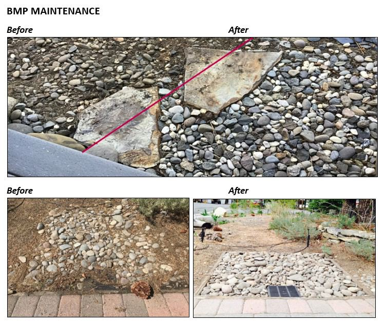

Owners of developed properties must ensure BMPs remain functional and effective to retain their BMP Certificate and comply with the TRPA Code of Ordinances. Routine maintenance preserves the lifespan of BMPs and minimizes discharges of stormwater runoff and pollutants to Lake Tahoe.
Commercial and multi-family parcels
To verify that BMPs have been maintained on a commercial or multi-family parcel, submit documentation to TRPA: photographs, invoices, and the maintenance log. Staff will determine whether the BMP Certificate of Completion can be reissued with a new date.
- Inspect every BMP and record it on the BMP Inspection and Maintenance Log, a fillable PDF that opens in any browser.
- Photograph each maintained BMP and keep the contractor's invoice if one did the work.
- Send it all to TRPA with the APN in the subject line.
Submit maintenance documentation online Email documentation to bmp@trpa.gov Open the log (PDF)
Common BMP maintenance
Each fact sheet comes from Chapter 4 of the BMP Handbook and covers inspection and maintenance for that practice. The videos show the work on real Tahoe properties.
Soil stabilization
Capture and conveyance
Pretreatment
For BMPs not listed here, see Chapter 4 of the BMP Handbook.
Maintenance logs and checklists
Keep a log of inspections and the maintenance you do. The fillable log covers the 20 BMP types with a yes or no check and a corrective action column for each; save it after each inspection. Chapter 6 of the BMP Handbook has the full inspection, maintenance, and monitoring guidance.
